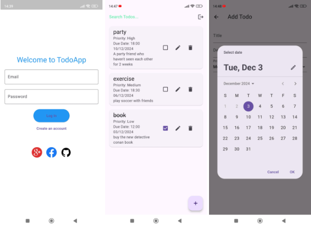
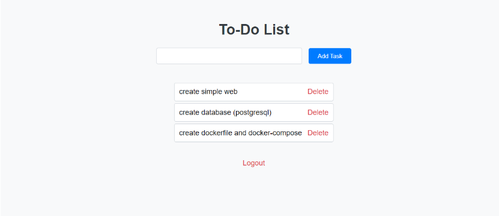

Todo App Flutter

Technologies Used: Flutter, Firebase, Docker, GitHub Actions
Project Description:
- Building a Todo App: Designed and developed a Todo application with Flutter, allowing users to add, edit, delete, and mark tasks as completed.
- Integrating Firebase: Configured Firebase Authentication for user authentication and Firestore for storing task data. Firestore provides a real-time database to synchronize data across devices.
- Using Docker: Created Dockerfile and Docker Compose to build and deploy the application. Docker ensures a consistent development and deployment environment, minimizing configuration issues.
- CI/CD with GitHub Actions: Set up an automated CI/CD pipeline with GitHub Actions to build and release APKs. The pipeline includes steps for code checks, building the application, and generating new releases.
Achievements:
- Improved Development Efficiency: Used Docker to standardize the development and deployment environment, reducing environment configuration issues.
- Continuous Integration and Deployment (CI/CD): Ensured continuous development and release of the application with GitHub Actions, reducing response times and quickly deploying new releases.
- User-Friendly Interface: Designed a user-friendly and responsive interface, improving user experience. Used Flutter to create custom widgets and a visually appealing UI.
GitHub Repository: Todo App Flutter
To-Do List Application

Technologies Used: Flask, PostgreSQL, Docker, Docker Compose, Prometheus, Grafana, Jenkins
Project Description:
- Developing a To-Do List Application: Designed and developed a To-Do List application with Flask and PostgreSQL, allowing users to manage daily tasks. Flask was used as the server-side framework, while PostgreSQL served as the primary database.
- Containerizing the Application: Used Docker and Docker Compose to containerize the application. Created Dockerfile to build the application container and Docker Compose to manage dependent services.
- Monitoring and Analytics: Set up Prometheus to collect monitoring metrics from the system. Used Grafana to visualize monitoring data, providing a comprehensive view of system performance and identifying potential issues.
- CI/CD with Jenkins: Set up a CI/CD pipeline with Jenkins to automate building, testing, and deploying the application. The Jenkins pipeline includes steps to build, test, and deploy the application automatically to the production environment.
Achievements:
- Efficient Task Management: The application helps users manage daily tasks efficiently with a simple and user-friendly interface.
- Automated Deployment Process: Used Jenkins to automate the build and deployment processes, saving time and effort, ensuring continuous and stable deployment.
- Comprehensive System Monitoring: Set up comprehensive monitoring with Prometheus and Grafana, helping to detect issues early, optimize system performance, and ensure stable operation.
GitHub Repository: To-Do List Application